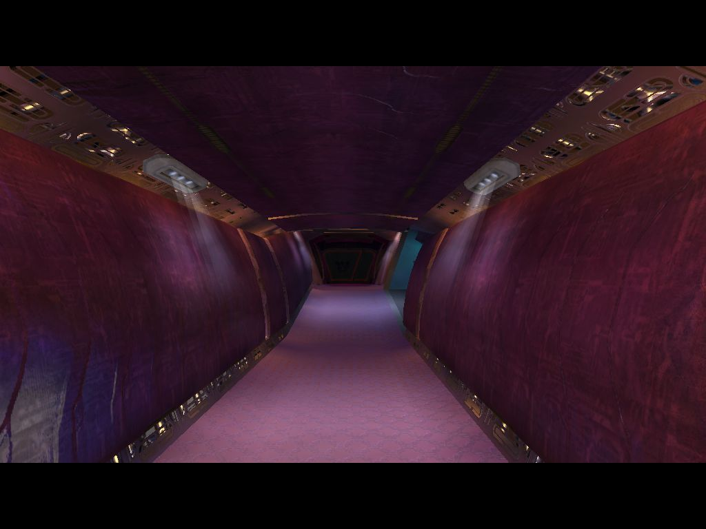
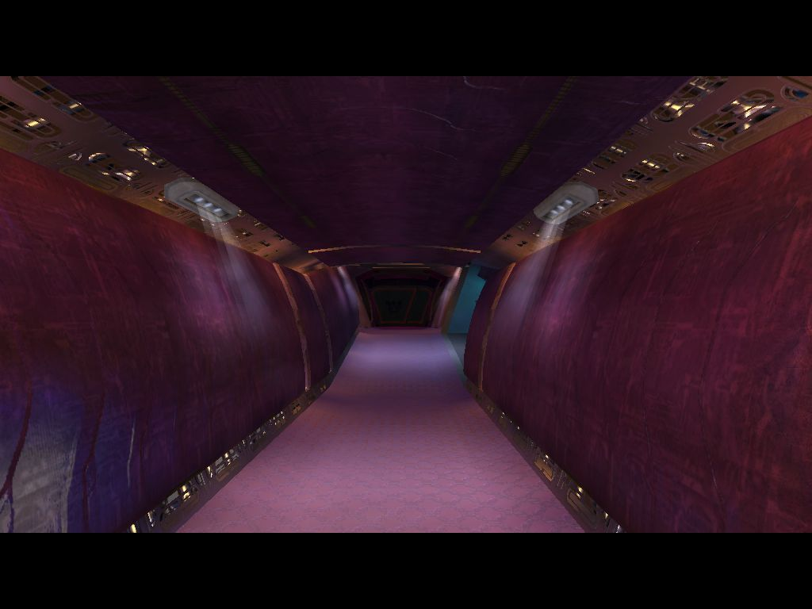
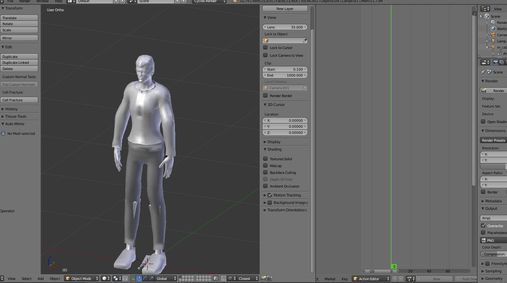
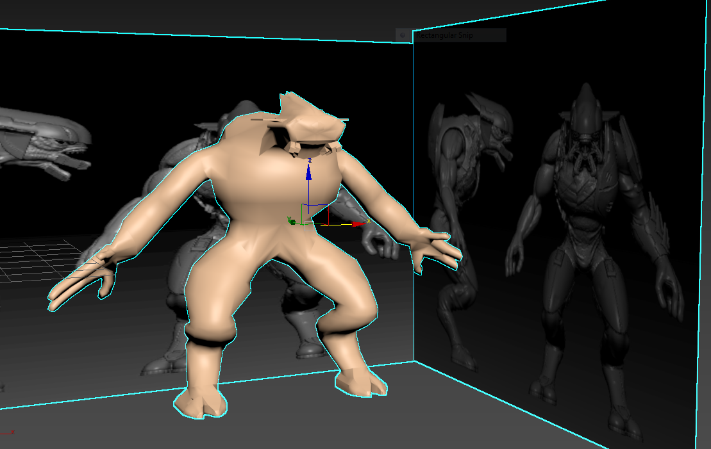
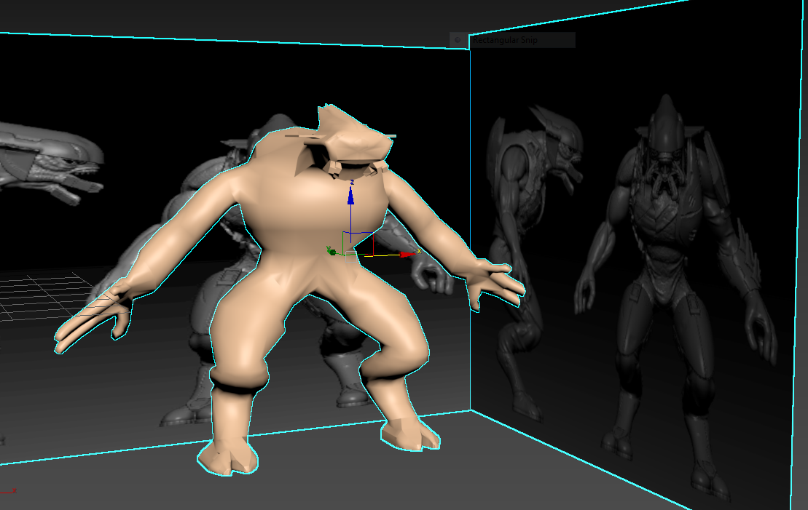
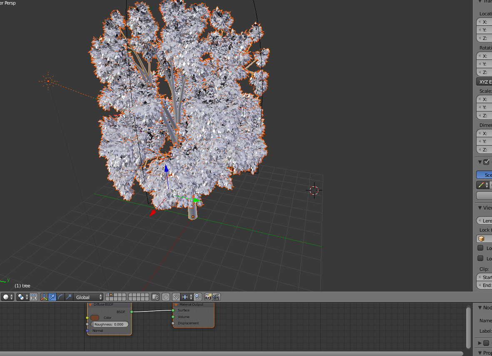
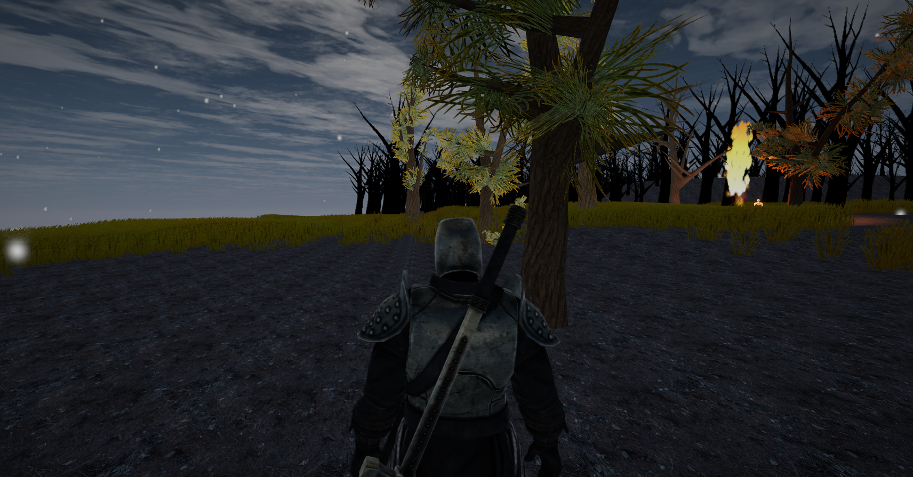

My Work With Blender & 3DS Max
 

Hallway
The work above is a hallway from the game Halo Combat Evolved. I used 3Ds Max to create the hallway with a two week period to plan, modify, and finish it. The textures for the hallway are all given by 3ds max. This was my first time using a program like 3Ds Max and had never used a model program before.
Character Design
The photo above is one of eight different characters I had made for a capstone. The program used is Blender and character here is made with a program that I downloaded with Blender. I then attempted to use a another program that uses the Xbox One Kinect for motion capture. The character is for a capstone game that I made with my friends. The games theme is like clue and with eight players in one match.
 

Modeling
The two photos above are maded on 3ds max. I was working on this model along with the hallway but due to time I could not get the model detailed, rigged or textured. The first image is the same project. I had planned to put a character into the scene and animate the character to do a pose.
More Blender Work
More work from blender. This is from the addon sapling and can generate trees of any kind for your use.
Unity
The image above is from a small game demo I made for Finger lakes community college. The class wanted an enviroment and a character to show off our skills that we learned from the lessons we learned from my class.